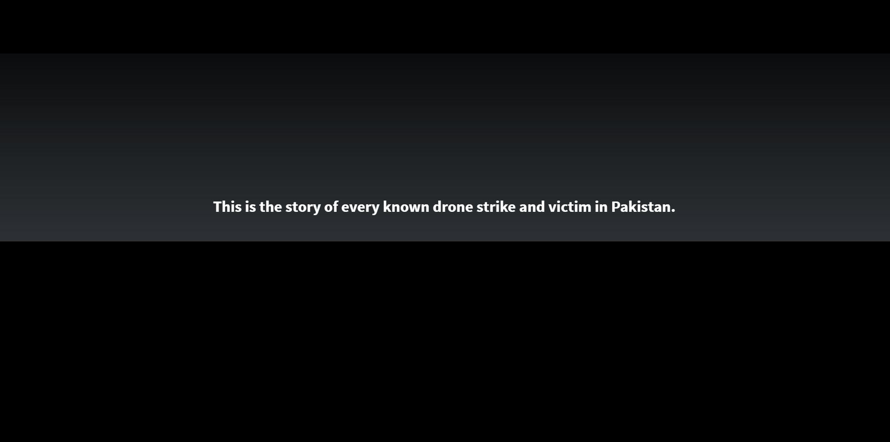

Out of Sight, Out of Mind

(1) List events chronologically
(2) Provide numeric data for each incident
(3) Allows for comparison between incidents
Cons: Where does it fail?
A data visualization class by Juan Saldarriaga
Assignment 2 _ Group 2
Ge Zhao - Majed Abdulsamad - Maira Khan - Jianghanhan Li
1. Introduction
Who created it? When? Intent/objectives (choice of name) - illustrate the attacks by the drones. - emphasis on the victims. Type of visualization techniques used2. Subjectivity
Is the intent political? If yes, does that affect the way story is being told? (This project helps to bring light on the topic of drones. Not to speak for or against, but to inform and to allow you to see for yourself whether you can support drone usage or not.) But the description says otherwise *conflicting statements*3. Target/ Audience
Language of website (En + Fr) no Urdu or other local languages4. Pros and Cons
Pros What it does really well?(1) List events chronologically
(2) Provide numeric data for each incident
(3) Allows for comparison between incidents
Cons: Where does it fail?